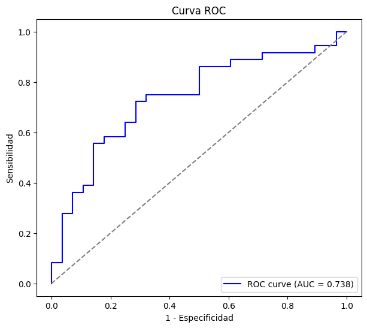
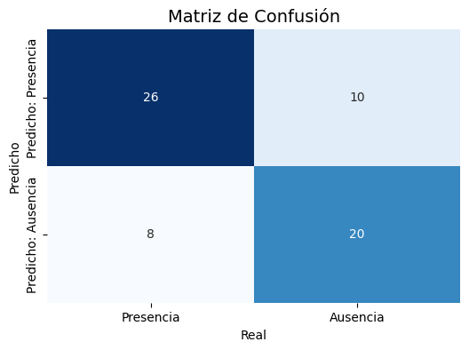

Modelo de Regresión logística#
Estructura de los datos
mod1 = smf.logit(
"fibrosis ~ trgl + got + ggt + prottot + alb + leucos + hcto + plaq + iq + C(sexo)",
data=train_data
).fit()
print(mod1.summary())
Optimization terminated successfully.
Current function value: 0.505728
Iterations 7
Logit Regression Results
==============================================================================
Dep. Variable: fibrosis No. Observations: 258
Model: Logit Df Residuals: 247
Method: MLE Df Model: 10
Date: Thu, 02 Oct 2025 Pseudo R-squ.: 0.2622
Time: 20:13:42 Log-Likelihood: -130.48
converged: True LL-Null: -176.84
Covariance Type: nonrobust LLR p-value: 1.538e-15
=======================================================================================
coef std err z P>|z| [0.025 0.975]
---------------------------------------------------------------------------------------
Intercept 7.7371 3.444 2.246 0.025 0.987 14.488
C(sexo)[T.Femenino] -1.4339 0.323 -4.433 0.000 -2.068 -0.800
trgl -0.0031 0.002 -1.666 0.096 -0.007 0.001
got 0.0129 0.004 3.079 0.002 0.005 0.021
ggt 0.0032 0.002 1.675 0.094 -0.001 0.007
prottot 0.5169 0.288 1.797 0.072 -0.047 1.081
alb -1.5430 0.493 -3.129 0.002 -2.509 -0.577
leucos -0.0002 0.000 -1.822 0.068 -0.000 1.44e-05
hcto 0.0713 0.040 1.775 0.076 -0.007 0.150
plaq 7.632e-06 4.14e-06 1.843 0.065 -4.84e-07 1.57e-05
iq -0.0789 0.027 -2.959 0.003 -0.131 -0.027
=======================================================================================
# --- Odds Ratios e intervalos de confianza ---
OR = np.exp(mod1.params)
IC = np.exp(mod1.conf_int())
print("\nOR:\n", OR)
print("\nIC:\n", IC)
OR:
Intercept 2291.788965
C(sexo)[T.Femenino] 0.238385
trgl 0.996917
got 1.012972
ggt 1.003159
prottot 1.676893
alb 0.213744
leucos 0.999810
hcto 1.073901
plaq 1.000008
iq 0.924143
dtype: float64
IC:
0 1
Intercept 2.682048 1.958316e+06
C(sexo)[T.Femenino] 0.126458 4.493777e-01
trgl 0.993303 1.000544e+00
got 1.004697 1.021316e+00
ggt 0.999464 1.006867e+00
prottot 0.954096 2.947261e+00
alb 0.081322 5.617948e-01
leucos 0.999605 1.000014e+00
hcto 0.992584 1.161881e+00
plaq 1.000000 1.000016e+00
iq 0.877091 9.737196e-01
# Probabilidades en el conjunto de prueba
prob1 = mod1.predict(test_data)
# Calcular curva ROC
fpr, tpr, thresholds = roc_curve(test_data["fibrosis"], prob1)
# AUC
auc = roc_auc_score(test_data["fibrosis"], prob1)
print("AUC:", auc)
# Graficar curva ROC
plt.figure(figsize=(7, 6))
plt.plot(fpr, tpr, color="blue", label=f"ROC curve (AUC = {auc:.3f})")
plt.plot([0, 1], [0, 1], color="gray", linestyle="--") # línea diagonal
plt.xlabel("1 - Especificidad")
plt.ylabel("Sensibilidad")
plt.title("Curva ROC")
plt.legend(loc="lower right")
plt.show()
AUC: 0.738095238095238

# --- Mejor punto de corte (Youden index) ---
sens_spec = tpr + (1 - fpr)
idx_max = np.argmax(sens_spec)
cutoff = thresholds[idx_max]
print(f"Mejor punto de corte: {cutoff:.3f}")
Mejor punto de corte: 0.485
# Binarizar predicciones con el mejor cutoff
predicciones = (prob1 >= cutoff).astype(int)
# Matriz de confusión
cm = confusion_matrix(test_data["fibrosis"], predicciones)
print("Matriz de confusión:")
print(cm)
Matriz de confusión:
[[20 8]
[10 26]]
cm = confusion_matrix(test_data["fibrosis"], predicciones, labels=[1, 0])
plt.figure(figsize=(6,4))
sns.heatmap(cm, annot=True, fmt="d", cmap="Blues", cbar=False,
xticklabels=["Presencia", "Ausencia"],
yticklabels=["Predicho: Presencia", "Predicho: Ausencia"])
plt.title("Matriz de Confusión", fontsize=14)
plt.xlabel("Real")
plt.ylabel("Predicho")
plt.show()
